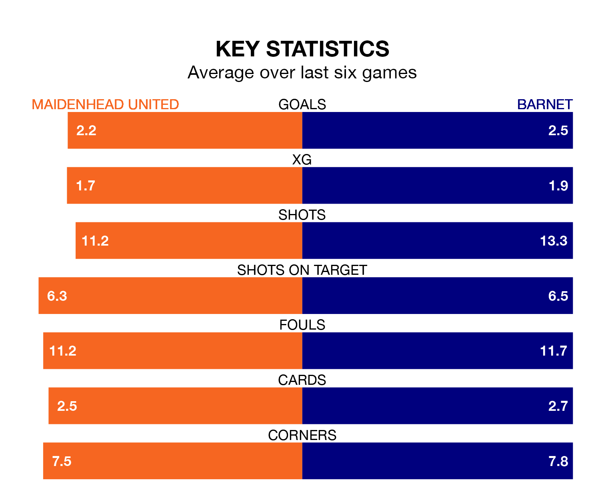

Barnet are strong favourites to take all three points despite Maidenhead United's home advantage in Saturday's match at the York Road Stadium.
*Betting Company* are offering odds of 1.81 on Barnet sealing the win, with the visitors sitting second in the National League table.
Maidenhead, who are 15th in the league and 27 points behind the Bees, are priced at 4.1 to win. A draw is set at 3.5.
With 82 goals in 42 games so far this season, Barnet are the league's third-highest scorers with 2.0 goals per game. And they are conceding fewer than average, letting in 56 goals at a rate of 1.3 per game.
Maidenhead, meanwhile, are below average scorers, with 1.2 goals per game, compared to a league average of 1.5. They have conceded 1.4 goals per game.
In the last 10 years, Maidenhead and Barnet have played each other on 11 occasions. Barnet won nine of them and they drew twice.
On average, Maidenhead scored 0.5 goals and the Bees 1.8 in those matches.
Their last meeting was on October 21, when Barnet won 3-2 at home.
United are in mixed form in the National League, with three wins and three losses from their last six games.
With four wins and a draw over that period, the Bees's form is better – they have taken 13 points from 18, compared to the home team's nine.
Maidenhead's last match was on Monday, a 3-2 win against Eastleigh, with Nigel Atangana (own goal), Shaun McCoulsky and William Lee De Havilland getting the goals for Maidenhead.
Barnet beat Oxford City 3-1 last time out, also on Monday, with Nicke Kabamba (two) and Gatlin O'Donkor on the scoresheet.
Updated: 16:41 (UTC), 04/04/24